先明确工作台要管的三类业务
| 业务范围 | 主要对象 | 必须回答的问题 |
|---|---|---|
| 合作管理 | 人员、项目、医生合作 | 医生与公司是什么关系？本次是日常还是项目合作，谁负责？ |
| 视频生产 | 内容，以及它的素材、版本、审核、交付、发布记录 | 做的是哪条内容，当前在哪一步，依据是什么？ |
| 沟通与协作 | 原始消息、处理事项、处理记录 | 有什么事需要回应或办完，谁负责，什么时候完成？ |
| 场景 | 医生档案 | 合作记录 | 内容归属与流程 |
|---|---|---|---|
| 公司自有医生做日常科普 | 同一个人员编号；公司关系为自有 | project_id 为空；仍有明确对接人 | 归日常合作；按日常已确认规则推进制作 |
| 公司自有医生被项目方选中 | 仍为公司自有，不改成外部医生 | 关联项目；selection_source 为项目方指定 | 归本次项目合作；按项目约定审核和交付 |
| 项目方带来一位新医生 | 独立建档；公司关系有依据才填写，否则待确认 | 关联项目；selection_source 为项目方指定 | 同一制作主流程；不自动算公司自有或纳入长期运营 |
生产主流程共用：文案 → 审核 → 录制/收片 → 剪辑 → 审片 → 交付 → 发布。需要谁审核、交什么规格、何时交付、统计归哪个项目，由具体合作约定决定，不因医生来源自动新增或跳过环节。
核对依据：本次用户澄清，以及本地历史资料中的公司医生合作分类和自有医生标注。历史分类不能直接推算当前名单、签约状态或客户指定范围；本稿不发布原始群聊和人员名单。
视频生产再回答六个问题
医生独立建档，区分与公司的合作关系；每次合作记录日常运营或项目范围、对接人，项目合作再记录选人方式。
一篇独立稿件所对应的一条内容。标题、版本和发布时间可变，内容编号保持不变。
文件可以先收到，再确认属于哪条内容。一次上传、一个文件和一条内容分别计数。
每次送审锁定确切文件。文案通过允许录制；成片通过允许按约定交付。
交付需要接收方、具体版本、时间和凭据。云盘文件存在只说明文件存在。
发布以平台帖子、链接和实际时间记账；排期和文件夹名字都不能代替。
业务动作决定数据怎么保存
| 业务动作 | 谁做什么 | 新增/修改的账 | 判断边界 |
|---|---|---|---|
| 建立合作 | 确认医生、日常或项目范围和对接人；项目合作再记录选人方式 | 医生合作 | 公司关系与项目选人分别记；日常合作无需虚构项目 |
| 登记内容 | 明确一篇稿件及其内容类型、责任人 | 内容单 | 只聊选题不自动增加内容产量 |
| 提交文案 | 保存文案文件，选定一个送审版本 | 文件 + 送审版本 | 文件正文改变就换版；标题变化不新建内容 |
| 确认文案 | 按约定顺序收集该版本的审核意见 | 审核意见 | 按本次规则审核；既有项目示例：文案医生→企业 |
| 收片与补录 | 登记收到的文件；确认哪些属于这条内容 | 文件 + 内容素材引用 | 视频条数不能代替完成稿数；未知归属可以保留 |
| 确认素材可用 | 明确素材收齐且可用，并计算剪辑交片时间 | 内容单 | 按该合作已确认的交片时限；两个工作日仅用于已约定的范围 |
| 剪辑与返工 | 提交确切成片版本；有修改则再次送审 | 送审版本 + 审核意见 | 按本次规则审核；既有项目示例：成片企业→医生；旧批准不自动沿用 |
| 交付 | 登记接收方、文件版本、方式与时间 | 交付记录 | 终版完成须满足该内容规定的版本审核和交付要求 |
| 发布 | 先登记档期，实际发出后登记平台帖子 | 内容单 + 平台发布 | 发布安排、已发布目录名均不等于实际发布 |
| 统计与补稿 | 按已发布内容计算比例，再扣除在制内容 | 查询结果 | 先按内容的合作范围归集；日常产出不挪入客户项目；未知类型和未匹配发布单列 |
审核顺序按具体合作约定配置；公司关系和项目选人方式不直接决定审核路线。有项目按项目约定，无项目按已确认日常规则，每次送审冻结本次要求。医生助理发来的“收到”不自动算医生批准。
沟通与协作：围绕一件需要办完的事
| 动作 | 业务处理 | 记在哪里 | 判断边界 |
|---|---|---|---|
| 消息到达 | 保存原消息与原始账号；尝试识别人员和项目 | 聊天档案 | 身份未知仍保存，不冒认医生或员工 |
| 识别需办理的事 | 判断是通知、已有事项的补充，还是新的请求 | 候选或一个处理事项 | 十条消息可以只对应一个事项；一条消息也可提出两件事 |
| 分派与回应 | 指派一名当前责任人，登记回应 | 事项 + 处理记录 | 首次回应与办结分开；“收到”不能自动判解决 |
| 等待或协作 | 需要对方补充则等待；内部交接保留承诺和责任人 | 事项 + 处理记录 | 不默默重置原响应时间；延期需说明 |
| 解决或重开 | 对照完成条件，登记结果和证据 | 事项 + 处理记录 | 规则不再命中、有人发言或点过按钮均不是办结证据 |
| 跨入视频业务 | 如果请求明确涉及某内容，关联该内容 | 事项 → 内容 | 任务完成不代替版本批准、交付或实际发布 |
这部分与视频生产共用人员、项目和内容

事项和处理记录保存少量消息定位及必要摘录；这是程序核验的证据引用，不是假装有跨库外键。图中消息与事项因此没有实线外键。提出人和责任人是 people 的两个不同角色外键。
员工每天看到的三份清单
- 我负责的内容：下一步制作动作、当前版本与期限。
- 我负责的处理事项：待回应、待办结、等待对方、需交接。
- 待分拣资料：未匹配文件、发布记录和不确定消息候选，由有权限的人确认。
普通员工按明确分配的日常合作或项目内容访问；协调人员看获授权的合作或项目范围；停稿、恢复、重分配和权限变更按批准角色执行。身处同一个微信群不会自动获得整群或全部医生的数据权限。
由业务推导出的 15 张业务与沟通表
这是逻辑职责划分，不是要求新增 15 张表。聊天归档已有的会话和消息可以直接承担相应职责，避免复制一套。
需要独立重复出现的业务记录单独保存；普通当前属性直接放在所属对象上。比如一条内容有多次审核、多次交付、多次发布，分别留记录；当前负责人和制作阶段直接保存在内容单。

PK 为主键，FK 为外键；关系端点表示一或多、必需或可空。图示主干关系，人员责任和录入人外键省略连线。类型仅作逻辑示意。
人员people谁参与这项业务
一行代表：员工、医生、企业审核人；一个人一条记录。
| 字段/字段组 | 业务含义 |
|---|---|
| id | 稳定人员编号 |
| name / roles | 真实显示名与业务角色 |
| company_relationship | 医生与公司的关系：公司自有/非自有/待确认；非医生为空 |
| organization / position / active | 单位、岗位及是否有效 |
姓名不是唯一键；医生独立于项目存在。公司自有是业务合作标记，不等于公司雇员，也不由签约二字、联盟等级或客户指定自动推断。业务角色不直接等于登录权限。
项目projects替哪个客户执行什么合作要求
一行代表：一个客户项目一条记录。
| 字段/字段组 | 业务含义 |
|---|---|
| id / name | 项目编号和名称 |
| content_rules | 科普/患教比例及约定的统计口径 |
| review_rules / delivery_rules | 按内容类型的审核顺序、交付规格和工作日约定 |
配置只表达已确定的业务选项；不建设通用流程引擎。规则更改不追溯改写已经送审的要求。
医生合作collaborations这位医生做日常运营还是项目合作、由谁对接
一行代表：一个医生的一段日常合作，或在一个项目中的一段合作，一条记录。
| 字段/字段组 | 业务含义 |
|---|---|
| id / doctor_id | 合作编号、医生 |
| project_id | 项目可空：空表示日常合作；有值表示项目合作 |
| selection_source | 项目选人方式：公司医生池/项目方指定/其他/待确认；日常合作为空 |
| owner_id | 当前对接负责人 |
| status / new_content_paused | 合作状态；是否暂停新增稿 |
| started_at / ended_at | 合作期起止 |
同一医生可有日常合作并参加多个项目，不重复建人。项目方指定也可能选中公司自有医生，两种属性不互斥。项目为空须已确认属于日常合作；归属不明先留候选。合作期或归属变化新建适用合作，不改写已有内容归属。暂停新增稿仅作用于该合作。
内容单contents我们到底要完成哪一条内容
一行代表：一篇独立稿件所对应的制作与交付单元一条记录；修改标题不换编号。
| 字段/字段组 | 业务含义 |
|---|---|
| id / code / collaboration_id | 内容编号及所属日常或项目合作；项目由合作推导 |
| title / content_type | 标题；科普/患教/待确认 |
| writer_id / editor_id / owner_id | 当前文案、剪辑与运营负责人 |
| production_stage / lifecycle | 制作阶段；正常/暂停/取消 |
| materials_ready_at / edit_due_at | 确认素材完整可用的时间及剪辑交片截止 |
| planned_publish_at / rule_snapshot | 约定档期；本条内容适用规则快照（日常约定或项目约定） |
| row_version | 防止多人修改互相覆盖 |
从明确稿件建档。日常内容不强制挂客户项目，也不因医生后来参加项目而自动计入该项目；归属纠错需明确操作并留审计。交付、发布状态从各自记录查看。
文件记录files收到的具体文件是哪一个内容版本
一行代表：一份可区分的文件内容版本一条记录；尚未归属内容也可登记。
| 字段/字段组 | 业务含义 |
|---|---|
| id / origin_collaboration_id | 文件编号；已知的来源合作，可空 |
| name / media_type | 文件名与类型 |
| source_ref / revision_ref | 来源平台、空间、对象 ID 与内容修订标识 |
| location_ref | 当前目录或访问位置，与文件身份分开 |
| content_hash / identity_quality | 可空指纹；可靠版本/仅线索 |
| observed_at / availability | 发现时间与当前可访问性 |
移动或改名只改变位置；替换内容产生新版本记录。没有历史版本依据时不能拿当前文件冒充当时文件。
内容素材引用content_materials这条内容用了哪些原片或参考素材
一行代表：一个内容与一份素材的确认关联一条记录。
| 字段/字段组 | 业务含义 |
|---|---|
| content_id / file_id | 内容与文件，组成唯一关联键 |
| purpose | 口播、手绘、补录、参考等用途 |
| confirmed_by / confirmed_at | 谁在何时确认归属 |
一条内容多份原片，同一原片也可用于多条内容。只增加引用，不复制视频文件。归属不明先留在文件收件列表。
送审版本content_versions这次请对方确认的究竟是哪一版
一行代表：一次明确选定文件的送审版本一条记录。文案、成片及需审核封面按 kind 区分。
| 字段/字段组 | 业务含义 |
|---|---|
| id / content_id / file_id | 送审版本编号、内容、确切文件 |
| kind / variant / version_no | 文案或成片等；输出规格；业务版次 |
| submitted_by / submitted_at | 提交人和实际送审时间 |
| review_requirements | 本次所需审核角色及顺序快照 |
| selected / withdrawn_at | 是否为当前选定版本；是否已撤回 |
一个送审版本只指定一份确切文件。内容修改、换文件或重新发起新轮审批都建立新送审版本；相同文件也可重新送审。不同规格分别管理，不自动继承批准。
审核意见reviews谁对哪一版作出了什么决定
一行代表：一次有明确对象的审核决定一条记录。
| 字段/字段组 | 业务含义 |
|---|---|
| id / version_id | 审核记录及对应送审版本 |
| reviewer_id / reviewer_role | 实际审核人及本次角色 |
| decision / reviewed_at | 通过/要求修改/撤回；实际决定时间 |
| recorded_by / recorded_at | 录入人和录入时间，与审核人分开 |
| evidence / supersedes_review_id | 少量证据引用及必要摘录；明确更正对象，可空 |
只追加决定，纠错通过明确更正记录处理。版本不明的“可以”不能变成批准；同一门槛冲突时停在待核对，不默认最后一句胜出。
交付记录deliveries给谁交了哪一份、何时交的
一行代表：一次向接收方交付某个内容版本一条记录。
| 字段/字段组 | 业务含义 |
|---|---|
| id / content_id / version_id | 交付编号、内容；确切版本可空以保留历史事实 |
| recipient_id / delivery_kind | 接收人；审片发送/终版交付/类型待确认 |
| delivered_at / delivery_ref | 实际交付时间及稳定位置或发送凭据 |
| recorded_by / evidence | 记录人及少量依据 |
审片发送不等于终版交付。一套含两种规格可以有两条版本交付记录，产量仍是一个内容。历史版不明可保留交片事实，但不宣称已满足终版要求。
平台发布publications平台实际上发出了什么
一行代表：某账号在某平台的一条实际帖子一条记录。
| 字段/字段组 | 业务含义 |
|---|---|
| id / publisher_account_id / external_id | 发布编号、平台账号及平台内容 ID |
| content_id / version_id | 可空的内容及确切版本关联 |
| url / published_at | 实际发布链接和时间 |
| verification / observed_at | 人工登记/平台核验/待核实；发现时间 |
排期不建已发布记录。同内容发两个平台算两条帖子、一个已发布内容。历史真实发布可以先登记，不倒推或补造缺失审核。
外部账号platform_accounts微信或发布平台上的账号是谁
一行代表：一个平台及其有效 ID 范围内的一个账号一条记录。
| 字段/字段组 | 业务含义 |
|---|---|
| id / platform / namespace / external_id | 内部账号编号及来源账号唯一键 |
| person_id | 确认对应的人员，可空 |
| nickname / binding_status | 原昵称；未知/推断/确认 |
一个人可以有多个账号；未知账号先保留。不按昵称合并人，也不把群内角色推断当作全局身份确认。
沟通场所conversations这些话发生在哪个群或私聊
一行代表：一个稳定来源会话一条记录。
| 字段/字段组 | 业务含义 |
|---|---|
| id / platform / namespace / external_id | 内部会话编号与来源范围内的平台稳定键 |
| name / kind | 原群名；群聊或私聊 |
| default_project_id / owner_id | 默认项目线索、默认对接人，均可空 |
群是沟通场所，可以同时谈多条内容、多个事项。默认项目不能直接决定每条消息的业务归属。
消息记录messages谁在何时说了什么
一行代表：一条来源消息一条记录。
| 字段/字段组 | 业务含义 |
|---|---|
| id / source_key | 内部编号与带账号范围的稳定去重键 |
| conversation_id / sender_account_id | 会话与原始发送账号；未知发送者允许为空 |
| sent_at / kind / body | 发生时间、文本/视频/文件等类型、正文或占位 |
| reply_ref / raw_metadata | 引用定位及必要原始元数据 |
原消息不可被 AI 改写。视频消息可以只留占位；消息数、视频数和内容数不互相替代。群内昵称从原始元数据保留，无须先建立完整群成员管理。
处理事项work_items哪件事需要有人办完
一行代表：一个可描述完成条件的外部请求或内部协作事项一条记录。
| 字段/字段组 | 业务含义 |
|---|---|
| id / title / kind | 事项编号、要做的事；外部请求/内部协作 |
| project_id / content_id | 项目可空；同时关联内容与项目时，项目必须与内容的合作归属一致；日常内容不硬挂项目 |
| requester_id / assignee_id | 提出人可空；当前责任人可空以支持待分派 |
| status / priority | 待处理/处理中/等待对方/已解决/已取消；优先级 |
| response_due_at / completion_due_at | 外部回应时限、约定办结时限分开；均可空 |
| acceptance / evidence | 完成条件，以及少量来源消息定位 |
| created_at / resolved_at / row_version | 创建、实际解决时间与并发版本 |
四个业务外键都有具体用途：项目、内容、提出人、责任人。不关联文件、文件版本、审核、发布、AI 结果等所有对象。一次事项可以有多条消息，多次回应不必重复建事项。
事项处理记录item_notes这件事经过怎样的沟通和交接
一行代表：一次处理说明或沟通反馈一条记录。
| 字段/字段组 | 业务含义 |
|---|---|
| id / item_id / author_id | 记录编号、事项、记录人 |
| kind / note / happened_at | 说明、回应、交接、解决说明等；正文与时间 |
| evidence | 关联的消息定位、必要摘录或内部操作说明 |
记录围绕一个事项，不能驱动所有业务对象。改负责人、解决或重开同时更新事项并保存说明；真实字段修改前后值由运行层审计保存。
当前进度、审核、交付、发布分开看
| 页面维度 | 从哪里判断 | 显示示例 |
|---|---|---|
| 制作进度 | 内容当前阶段，经业务动作校验更新 | 文案中 / 审稿中 / 待录制 / 剪辑中 / 审片中 / 制作完成 |
| 审核情况 | 当前送审版本及所需审核意见 | 成片 v2：企业通过、医生待审 |
| 交付情况 | 交付记录与该内容要求的输出规格 | 已发审片；或终版已交付、位置待核对 |
| 发布情况 | 真实平台帖子与内容匹配 | 已排期未发布 / 一个内容已发两个平台 |
| 确定程度 | 证据质量、对象匹配与来源覆盖 | 已确认 / 待核对 / 覆盖不完整 |
作品页面的正常下一步直接查询
- 文案未提交 → 文案人员的工作队列。
- 当前文案版本缺某个必要批准 → 对应的待审队列。
- 文案通过但素材未确认完整 → 待录制/补录队列。
- 素材已确认、未有当前成片送审版 → 剪辑队列。
- 成片要求修改 → 剪辑返工队列；明确新版本后重新审核。
- 当前要求的输出版本通过、没有终版交付 → 待交付队列。
- 已有确认档期、尚未匹配实际发布 → 待发布队列。
正常制作队列从内容进度生成。处理事项只记录另有完成条件的客户请求或员工协作，例如解释一处修改、补一个发布链接、安排一次交接。交接事项完成不自动等于视频制作完成，事项状态也不能替代医生审批。
状态通过明确动作更新
提交新版本、确认素材、登记审核等动作，在同一事务中校验对象和版本，再更新内容的当前进度。保留并发版本号和操作前后记录。普通列表读取当前进度即可，不要求每次重放一套通用事件历史。
审核、交付、发布保存真实历史；对错误记录作有依据的更正，不直接删除痕迹。AI 只提出候选，不能覆盖人工确认。迟到的旧版本消息不能推进当前版本。
用一个实例检验是否记得清
- 公司自有医生 A 由项目方选中参与项目 P，建立项目合作；其原有日常合作继续独立存在。
- 确定一篇患教稿，建立内容 C-001；选题讨论不计额外内容。
- 文案 v1 送医生审核，修改后提交 v2；v2 医生和企业通过后录制。v1 的意见仍保留。
- 收到两份原片，分别登记文件并关联 C-001。第三份无法确定题目的原片先留在收件列表。
- 剪辑确认两份原片完整可用，登记时间并计算交片截止。
- 提交成片 v1，企业要求修改；提交 v2 后企业、医生分别批准 v2。
- 交付 v2 的 1080p 文件。如果另需 2K，登记它自己的版本，并确认该规格的审核要求，不能因为名称相近自动继承批准。
- 按约定时间发到两个平台，新增两条发布记录。
另一个常见情况：聊天能确认已交片，历史文件版本却找不到。这时保留交片事实，版本为空并展示“待补核”；既不补造版本与审批，也不把它改成“未剪辑”。
实施边界与必要约束
| 运行支撑对象 | 持久化什么 | 业务界限 |
|---|---|---|
| 登录账号与授权 | 账号与人员映射、会话、访问范围和角色 | 与微信账号不同；不拿业务角色直接当权限 |
| 同步检查点 | 每个来源/账号/范围的游标、最近成功时间、覆盖范围、错误 | 成功提交后才推进；十分钟调度不等于数据始终新鲜 |
| 导入与候选记录 | 来源稳定键、必要原始快照、建议、分析版本、人工接受或拒绝 | 机器重跑不能覆盖已确认归属；拒绝也保留以避免反复推荐 |
| 操作审计 | 操作人、对象、动作、变更前后值和时间 | 用于追责与恢复，不承担业务状态计算，不需要十几个业务外键 |
15 张是业务与沟通表数。另有登录权限、同步水位、机器候选与操作审计等运行记录；它们明确列在下方，不参与作品生产关系，也不作为泛化业务事件。
- 目录是收纳位置，不能决定业务状态。建议按医生和内容统一收纳以减少认领工作，但文件传错目录仍可登记、待核对和重新关联；审片版与终版通过版本记录区分，不能只靠文件名或所在目录判断。
- 医生与项目归属分开。医生独立建档；日常合作的项目为空，项目合作关联具体项目。一个医生加入新项目不会改变其旧内容归属，也不会自动授予新项目成员访问日常资料的权限。合作身份与选人方式改变时保留操作记录，历史统计按内容所属合作与当时依据核对。
- 未知文件允许存在。文件可以没有内容归属；认领确认后才增加素材关联或送审版本。相机文件名和目录名仅作线索。
- 版本身份必须可靠。送审文件需要可锁定的修订标识、受控快照或不可覆盖存储；只有微信视频占位时只能记录线索，不能自动证明确切版本。
- 一个送审版本只指定一份确切文件。封面、不同输出规格若分别需要审批，分别建立送审版本。无需审批的参考附件只作为素材引用。
- 当前版本选择唯一。同内容、同用途、同输出规格只选择一个当前送审版本；多个旧版的批准不拼成当前版本批准。
- 跨记录归属一致。交付或发布指向的版本必须属于同一内容；允许历史版本为空，但不能串到其他内容。
- 审核与录入人分开。员工录入医生意见不等于员工代替医生批准；人员角色和授权从已确认身份来。
- 证据少量就近保存。审核和交付记录保存稳定消息定位及必要摘录，不复制整群聊天。跨库引用由服务校验；完整来源另行归档。
- 未配平台记录不丢。平台发布可暂时无内容归属；统计时显示待匹配数量和覆盖范围，不把未匹配部分当作未发布。
- 重复读取不重复记账。文件来源标识、素材引用键、送审操作键和平台账号+帖子 ID 分别去重；正式动作有幂等键。此处为工程约束，并未省略其实现工作。
- 暂停新稿有明确范围。对某医生某项合作的暂停不停止其已有剪辑，也不扩散到日常运营或其他项目。
这是从业务推导的逻辑设计稿，范围包含视频生产、聊天待回复与员工协作。本稿用于设计评审，尚未执行建表、迁移或生产写入。参考的是既有业务约定与核对案例，不把旧数据库结构作为设计前提。